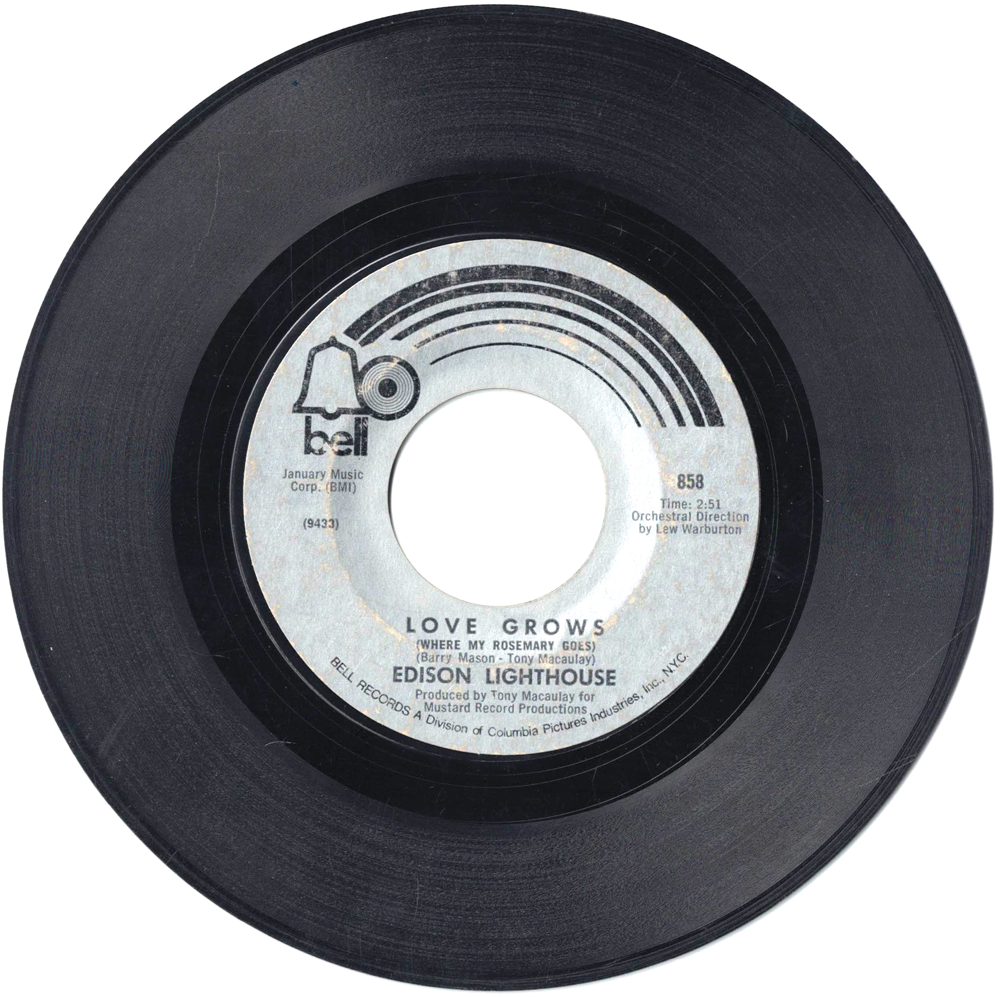

Product No. HEC-0114
$4.95
Shipping: $8.95
Description
45 RPM, 7-inch single
Full Description
**Edison Lighthouse** was a British pop group best known for the 1970 hit "Love Grows (Where My Rosemary Goes)." The song became an international success, reaching No. 1 on the UK Singles Chart and becoming a major hit in the United States and several other countries. Edison Lighthouse was primarily a studio-created act assembled around singer Tony Burrows, a prolific session vocalist who also sang lead on recordings by several other British pop groups of the era. "Love Grows (Where My Rosemary Goes)" was written by Tony Macaulay and Barry Mason and featured the bright, melodic sound associated with late-1960s and early-1970s British pop. Because Burrows was involved with several studio projects at the same time, a separate touring version of Edison Lighthouse was formed to perform the song publicly. This has sometimes caused confusion over the group's membership and history. Although Edison Lighthouse never matched the enormous success of "Love Grows," the record has remained a popular oldies favorite and is frequently included on compilations celebrating the pop music of the early 1970s. Its catchy melody, upbeat arrangement, and instantly recognizable chorus helped make Edison Lighthouse one of the memorable one-hit pop acts of the era.
Condition
Good condition